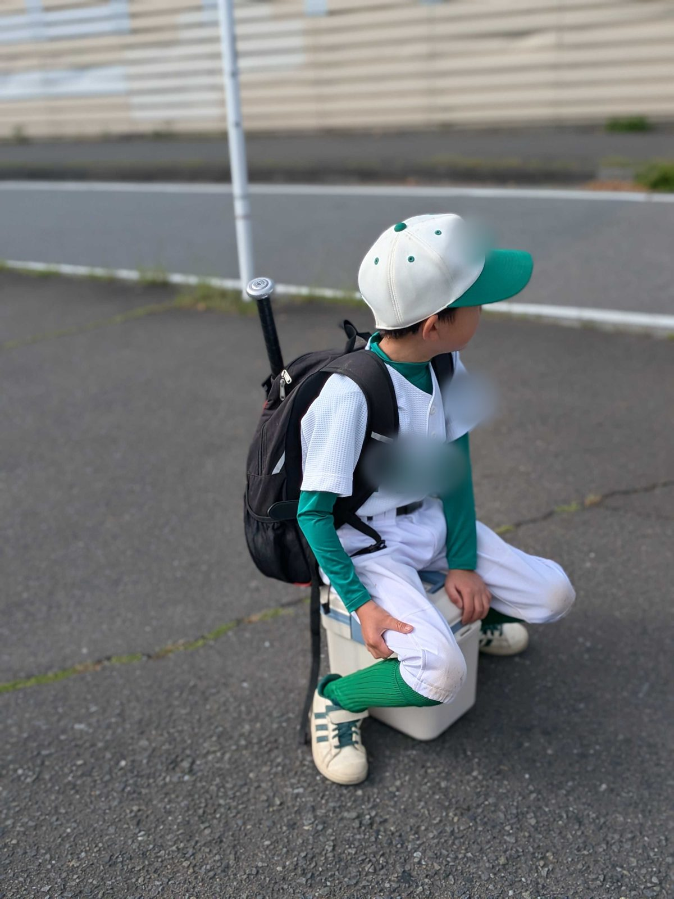

第二営業部には、毎朝8時にSlackで「商談号外」が届く。前の日の商談からひとつ選んで、お客様に響いた話や、次にどう話すかをまとめたものだ。書き手はAIで、この仕組みを作ったのが菅野だった。
新しい商談の記録がない朝も、号外は休まない。「本日は新規の商談ログがありませんでした（直近3日分を確認済み）」。その一行だけが届く日もある。
毎日続ける仕事は、AIに任せる
過去にXやnoteなどのSNSの発信を習慣化しようと何度も試みたことがありますが、まず継続させるところが非常に大変で、さらにアウトプットがどんどん枯れていってしまう。
菅野のSlack回答より
続かないと、書くことがなくなっていく。面白くなくなって、やめてしまう。菅野はそれを何度も経験してきた。
だから号外では、「続けること」と「ためていくこと」を、人のやる気に頼らないことにした。そこはAIに全部任せている。
号外のほかにも、AIに任せている仕事がある。自分の商談を別の担当の目で掘り下げる記事づくりや、会社のLPをAIに読ませて音声にし、ラジオ番組のように聞けるようにする試みだ。どれも、人の手だと途中で止まりやすい。
ノートとペンを置いたら、覚えていなかった
商談中に実際に筋肉を使って、ノートとペンでお客様の課題や目指している理想像などを記すという行為をしなくなってしまい、打ち合わせの細部が脳みそに刻まれていないという経験をしたことがあります。
菅野のSlack回答より
任せすぎたこともあった。記録をAIに預けられるようになって、商談中に手で書くのをやめた。すると、打ち合わせの細かいところが頭に残っていなかった。
そこで菅野は、分け方を決め直した。続けることとためることはAIに任せる。それ以外は、自分で手を入れる。
続けるのは、AI。
考えるのは、自分。
伸びる子は、なぜ間違えたかを聞く
この考えを後押しした話がある。代表の白石が、チームみらいの安野貴博さんと会食する機会があった。その席で安野さんから聞いた話を、白石は9月25日の打ち合わせで菅野に教えてくれた。
小学生にAIを使わせると、成績が伸びる子と落ちる子の、2つに分かれるという。
落ちる子は、AIに答えを聞いてしまう。伸びる子は、自分がなぜ間違えたのかをAIに聞く。
答えを聞く子と、
なぜ間違えたかを聞く子。
同じAIを使っていても、使い方で差がつく。菅野には、この話が深く刺さった。
菅野には小学3年生の息子がいる。宿題や学校の催し、運動会に行くたびに、小学校の仕組みは昔とあまり変わっていないと感じるそうだ。一方で、世の中は大きく変わった。菅野自身のAIの使い方も、ずいぶん変わった。両方を見ているから、他人ごとではなかった。
AIで答えを求める人と、AIを使って自分の間違いや、自分の編み出した答えに対して「なぜ」を深掘りする人。この違いが、脳みその使い方、いわば筋肉の使い方の違いだと思いました。
菅野のSlack回答より
菅野は前から、YouTubeで知識を得るのと、本を読んで知識を得るのとでは、筋トレと散歩くらい違うと感じていた。同じ「インプット」でも、使う筋肉が違うということだ。
AIのまとめに、自分のひとことを足す
白石から話を聞いたその日の夕方、菅野は第二営業部のチャンネルにこう書いた。
AIで生成された自分の日報に対して、自分でコメントしましょうか！ 意図としては、自分の頭で振り返りなどしなくなって、退化しちゃうのを防ぐため。（中略）AIがまとめる。自分はこう思う。この差分が糧になると思いますので、やってみましょう！
第二営業部チャンネルへの投稿（9月25日）
日報はAIがまとめてくれる。菅野はそのまとめを読んで、「自分はこう思う」とひとこと足すようにした。任せきりにすると、自分で振り返らなくなるからだ。本人いわく、これは「脳みその筋トレ」。
チームにも同じことを呼びかけている。AIがまとめたものと、自分が思ったこと。その違いが、次の仕事の材料になると考えている。
代理店の先のお客様まで考える
第二営業部は、代理店やパートナー企業と組んでAIのサービスを届ける部署だ。自分で直接売るのと何が一番違うかを聞くと、菅野は「エンドユーザーのことをどれだけ考えられているか、という視野の広さ」と答えた。
少し乱暴な言い方になりますが、自分が直接売る場合は、自分の責任でとにかく使っていただくというのを目的に提案することがあります。
菅野のSlack回答より
代理店と組んで売るときは、考えることが増える。代理店の先にいるお客様が喜ぶか、商品がちゃんと役に立つか、代理店を支えきれているか。菅野はこの3つを同時に見ている。本人は、それを総合格闘技にたとえた。
先にいるお客様が満足しなければ、代理店も満足しない。代理店を通じてAIを広げるという目的も果たせない。だから、3つのどれも外せない。
代理店、商品、
その先のお客様。
3つを、ひとつの商談で見る。
休日の朝は、野球から

休日はたいてい早起きして、息子の野球に付き合う。最近は、体のほうも少しでも良くしたくて、運動することが多い。ここしばらくは天気が悪く、外で思いきり体を動かせない日が続いているので、家の中で運動している。
仕事中にはできない、自分の想像に任せたものをClaude Codeで作ることもある。
AIでいろんなことが誰でも平等にできてしまう世の中になったので、自分自身の経験や魅力、どういうところに行ったことがあるとか、何を食べたことがあるとか、何を見たことがあるとか、何にハマっているとか、そういったことをどんどん増やしていきたいなと思って。休日の時間を使おうとしています。
菅野のSlack回答より
AIで誰でも同じことができるようになるほど、その人が見てきたもの、食べてきたもの、ハマっているものが、その人らしさとして残る。菅野が次に始めたいのは、パワースポット巡りだそうだ。
AFTER THE STORY ／ この回のまとめ
続けることはAIに、
考えることは自分に。
号外や記録のように、続けること・ためることはAIに任せる。そのうえで、AIがまとめた日報には自分の言葉を足し、商談では自分の手で書く。AIがまとめたものと自分が思ったことの違いを、次の仕事の材料にしている。
本人に追加で聞きたいこと
- 日報にひとこと足すようになって、メンバーの書き方は変わったか。
- 細かいところが残らなかった商談のあと、ノートとペンは戻ってきたか。
- 代理店と組んだ商談で、その先のお客様が喜んでくれたと感じた場面。
- 最初に行ってみたいパワースポット。
＊